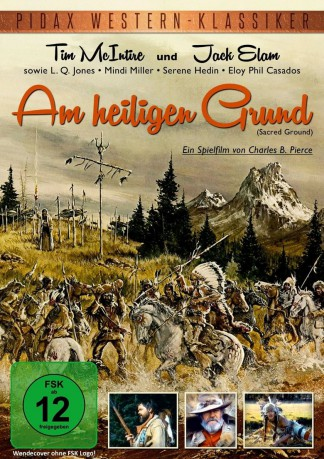

#1365 Am heiligen Grund
Alternativ: Sacred Ground
 
 IMDB-Wertung: 6.0 / 10
IMDB-Wertung: 6.0 / 10  Metascore: 0
Metascore: 0 
Trapper Matt Colter hat sich gemeinsam mit seiner Frau eine Hütte in den Bergen Oregons gebaut. Da er nichtsahnend als Standort die Begräbnisstätte eines lokalen Indianerstamms gewählt hat, wollen die Indianer ihn vertreiben. Bei einer Auseinandersetzung findet Colters Frau, die gerade ein Baby zur Welt gebracht hat, den Tod. Mit Hilfe eines anderen Trappers entführt Colter die Frau des Indianerhäuptlings, die von nun an sein Baby großziehen soll.
Jahr: 1983
Dauer: 100 Minuten
FSK: 12
Land: USA Studio: Pacific International EnterprisesTonspuren: DD2.0 - ,
Untertitel:
Auflösung: 1080p (1440x1080) Größe: 5601 MB
Genre: Drama, Western
Regisseur: Charles B. Pierce
Drehbuch: Charles B. Pierce
Soundtrack: Don Bagley, Gene Kauer
Darsteller:
 L.Q. Jones als Tolbert Coleman
L.Q. Jones als Tolbert Coleman Jack Elam als Lum Witcher
Jack Elam als Lum Witcher- Mindi Miller als Wannetta
 Eloy Casados als Prairie Fox
Eloy Casados als Prairie Fox- Tim McIntire als Matt Colter
- Serene Hedin als Little Doe
- Vernon Foster als Wounded Leg
- Lefty Wild Eagle als Medicine Man
- Larry Kenoras als Brave Beaver
- Franklin Fritz als Baby Colter
- Danny Wilson als Lone Brave
- Leslie Anderson als Warrior
- Ben Mitchell als Warrior
- Jerald Jackson Jr. als Warrior
- Ronnie Wilson als Warrior
- Ronnie Wright als Warrior
- Randy Shepard als Warrior
- Donald Wilson als Warrior
- Thurman Parrish als Warrior
- Leslie Anderson als Warrior
- Fernando Herrera als Warrior
- Darin Wright als Warrior
- Arnold Gallagher als Warrior
- Cora Lee Joe als Indian Woman
- Della Wilson als Indian Woman
- Marjorie Jackson als Indian Woman
- Natalie Jackson als Indian Woman
- Mary Sheppard als Indian Woman
- Bergie Jackson als Indian Woman
- Glenda Foster als Indian Woman
- Laura Hecocta als Indian Woman
- Adeline Jackson als Indian Woman
Datei: X:\HD-Western-1980-1999\Am heiligen Grund (1983, FSK12, 1440x1080).mkv seit 28.06.2015
Festplatte: HD Eastern+Western
 Es gibt insgesamt 29 Filme in der Gruppe 'HD-Western-1980-1999'
Es gibt insgesamt 29 Filme in der Gruppe 'HD-Western-1980-1999'